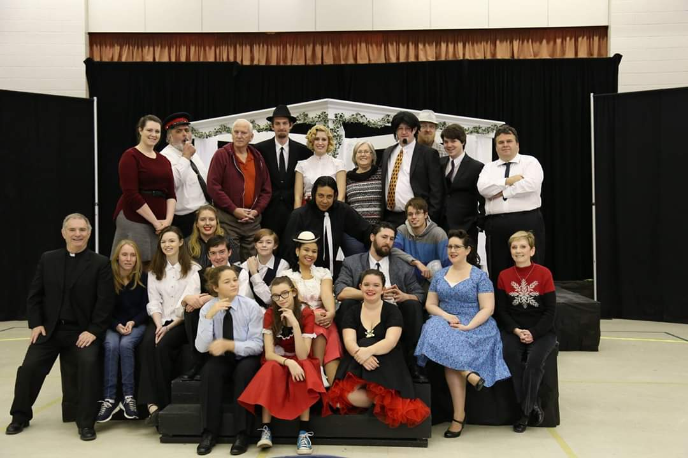
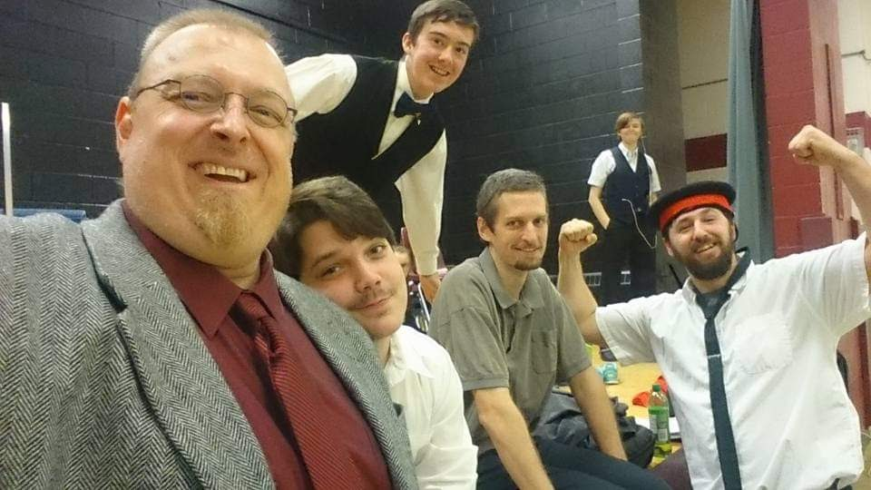
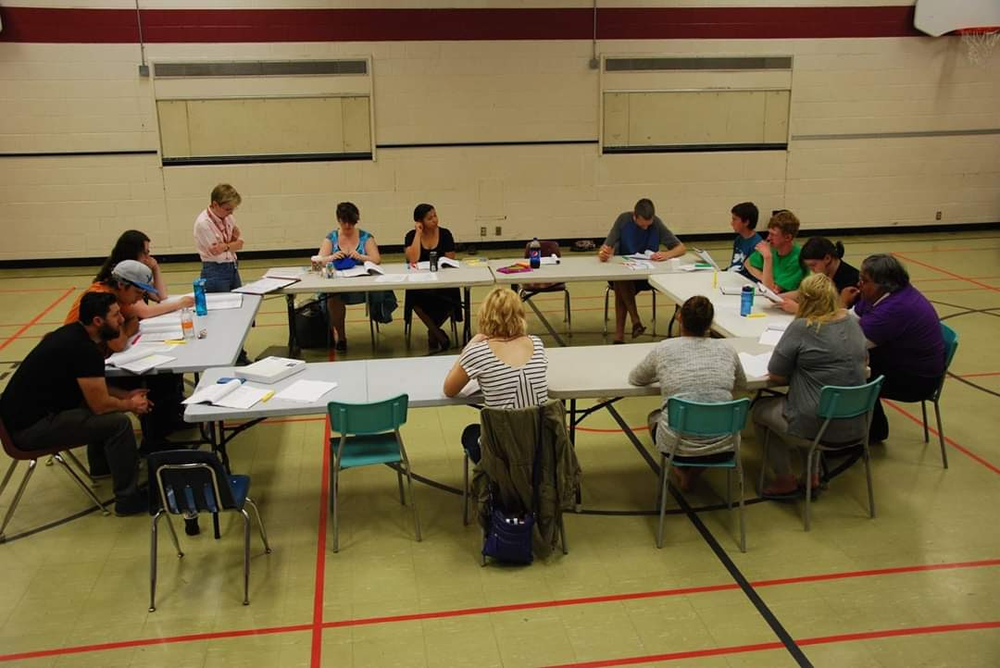
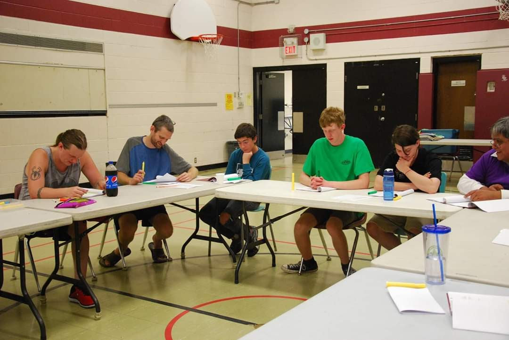
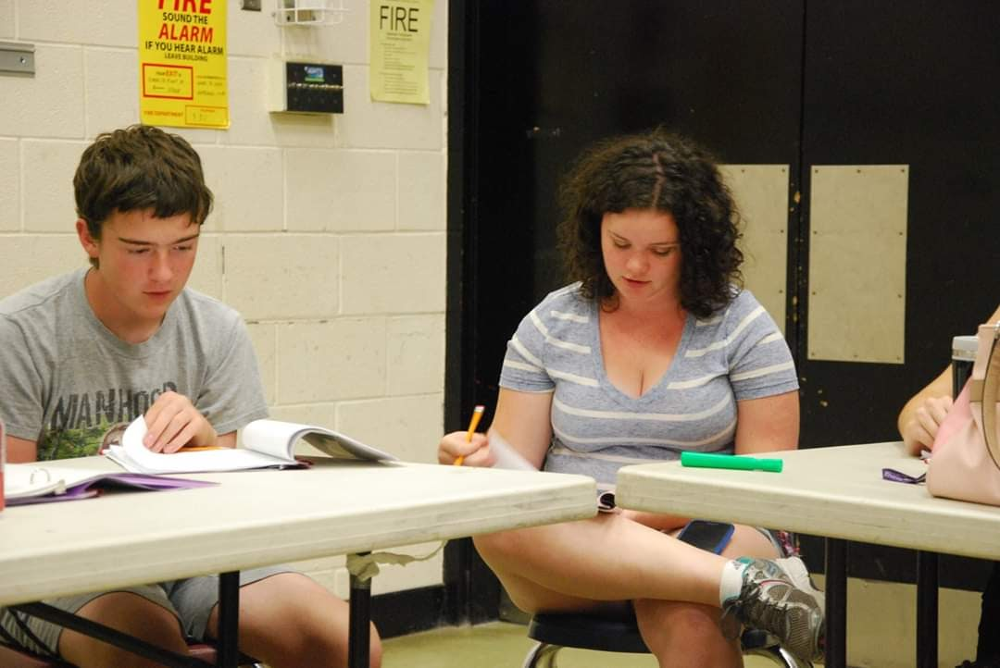
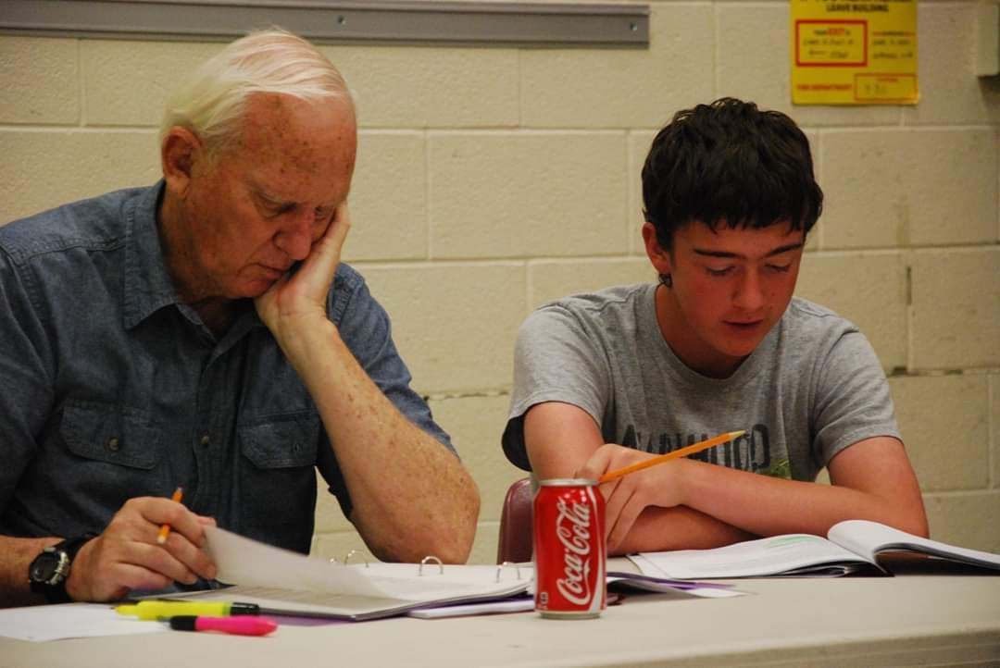
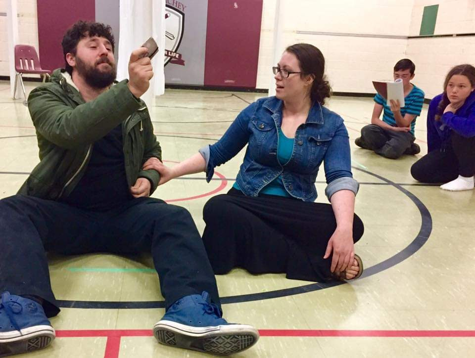
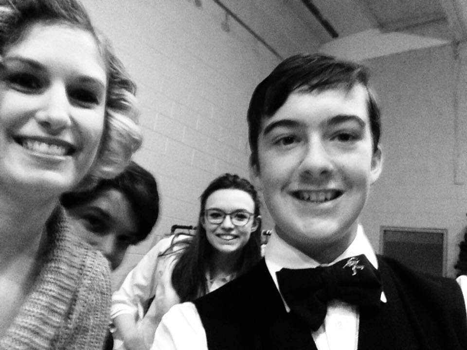

Daniel Astley's Portfolio
|
Theatre Experience
|
Video Projects
|
Audio Projects
|
Scripts and Short Stories
|
Contact
Ichthys Theatre: Much Ado About Nothing

Dani played the role of Balthasar for this production. The show ran in November of 2016 and was Directed by Lorna Stratton

Rehersal Photos






You Have reached the bottom of This page!!